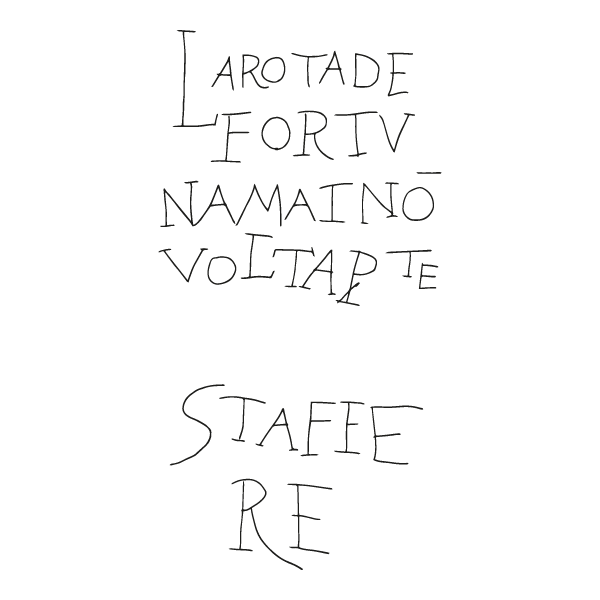
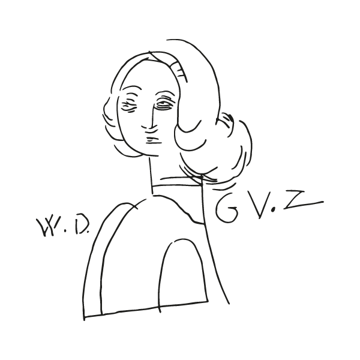
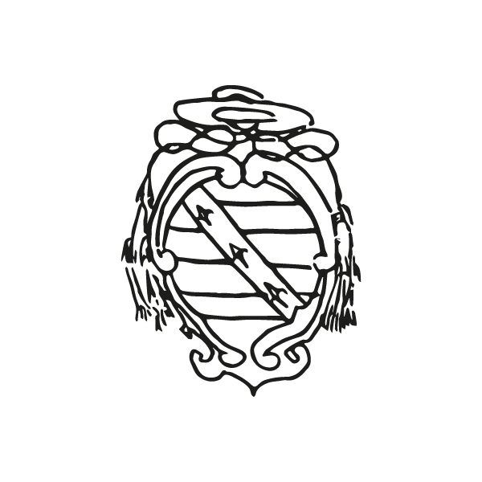
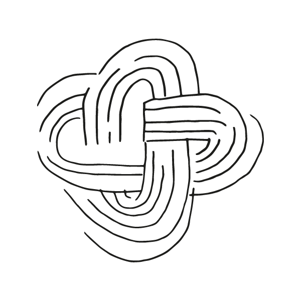

La mostra offre ai visitatori la scoperta di un ricchissimo patrimonio di incisioni tracciate sulle mura del palazzo ducale. Attraverso i muri del palazzo ripercorreremo 600 anni di storia.
|
I graffiti sono in gran parte incisioni ma non solo: si varia dal carboncino alla biro.

|

Oltre ai disegni sono presenti anche scritte di varie lingue: italiano, latino, francese, tedesco, spagnolo. |
|

La mostra è un progetto di uno studente dell'università ISIA che ha voluto raccontare la storia del palazzo con l'aiuto dei graffiti presenti in esso. |

Alla mostra sarà predisposto un virtual tour, che permetterà al visitatore di osservare le sale del palazzo rimanendo fermo. |